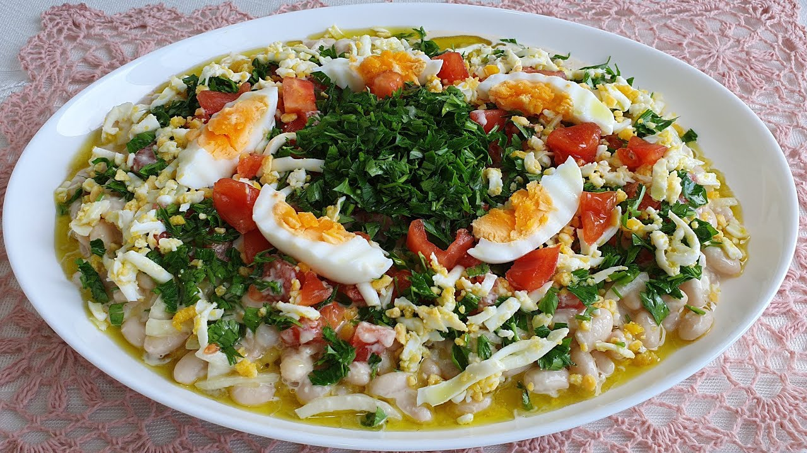
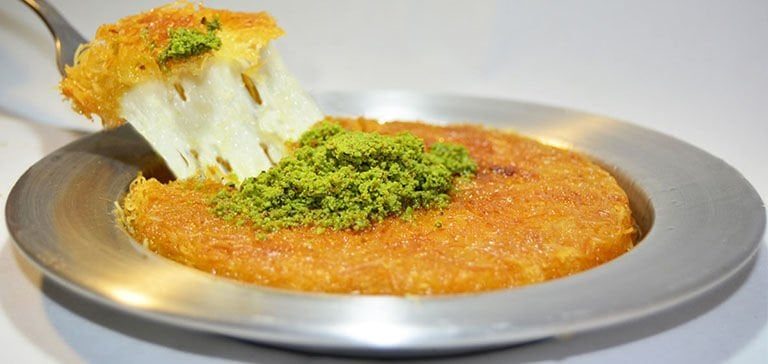
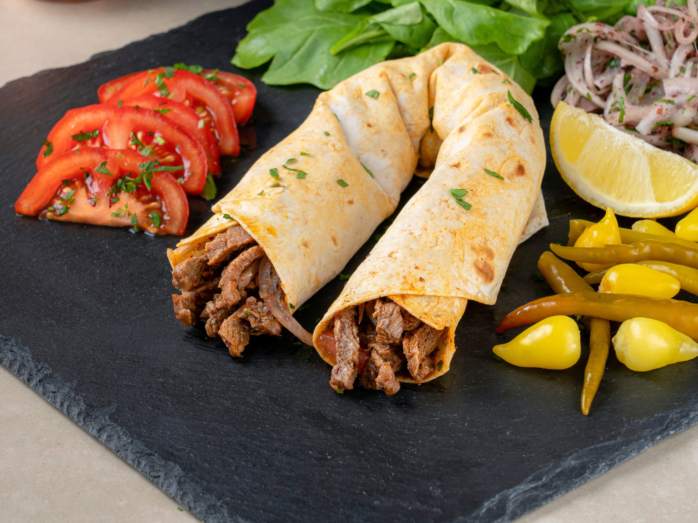

~ Mutfak ~
Akdeniz

Adana Kebap
Türk mutfağının tartışmasız zirve noktalarından biri olan Adana Kebap, sadece bir yemek değil, kuşaktan kuşağa aktarılan asırlık bir zanaatın tezahürüdür.
Detaylar için tıkla
Antalya Piyazı
Klasik bir salata anlayışını kökten değiştiren Antalya Piyazı, barındırdığı zengin malzemelerle başlı başına bir ana yemek vakarına ve derinliğine sahiptir.
Detaylar için tıkla
Hatay Künefe
Medeniyetlerin buluşma noktası Hatay’ın dünyaya en tatlı hediyesi olan künefe, peynir ve kadayıfın ateşteki en romantik ve tutkulu buluşmasıdır.
Detaylar için tıkla
Mersin Tantuni
Mersin’in sokak kültüründen tüm dünyaya yayılan Tantuni, basit malzemelerin usta ellerde nasıl birer sanat eserine dönüşebileceğinin en canlı kanıtıdır.
Detaylar için tıkla